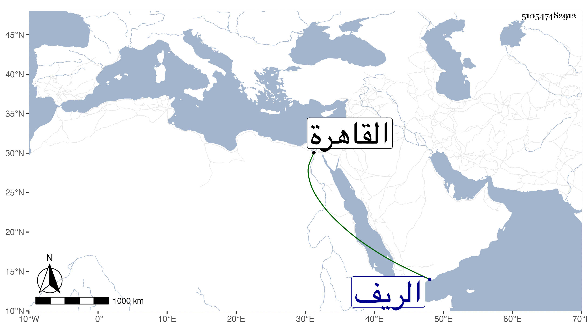

0902Sakhawi.DawLamic.ITO20230111-ara1.EIS1600.510547482912
Biography ID: 510547482912
637
حمزة بن غيث بن نصير الدين الآتي أبوه . قام الدوادار الكبير جانبك الجداوي في قتله فحكم بذلك الحسام بن حريز المالكي ونفذه بقية القضاة في مجلس عقد لذلك في بيت الدوادار ثم أودع المقشرة ، وسلخ في ثاني عشر جمادى الآخرة سنة ست وستين وحشى تبنا وطيف به من الغد على جمل بشوارع القاهرة بل وحمل على تلك الهيئة إلى بلاد الريف وطيف به القرى والبلاد وفرح جل المسلمين به ، فقد كان في الفسق بمكان من أخذ الأموال والمجاهرة بالمحرمات ، وضرب الفضة الزغل ، ولكن من تألم إنما كان لأجل أبيه مع انه لم يطق هذه النازلة بل مات عن قرب .
